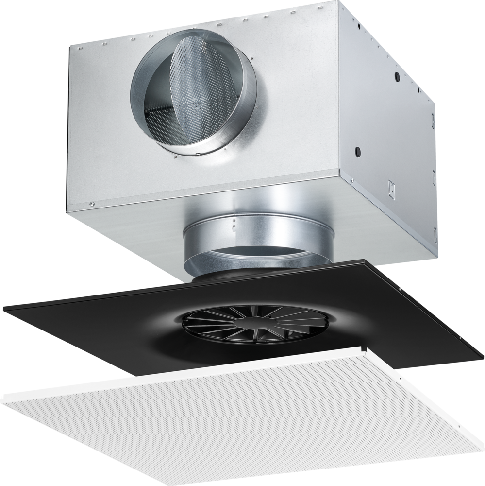

- Номинальные размеры
- 160, 250, 300, 400, 600 и 625 мм.
- Патрубки
- Номинальные диаметры 125, 160, 200, 250 и 315 мм.
- Применение
- Приток и вытяжка в комфортных и промышленных зонах; скрытая интеграция в потолок.
- Воздухораспределение
- Горизонтальная всенаправленная вихревая струя с высокой индукцией.
- Температурная разница
- −12…+10 K.
- Монтаж
- С камерой статического давления или прямым подключением к воздуховоду.
TID особенно полезен в премиальных интерьерах, офисах и объектах с архитектурно чистым потолком: воздухораспределитель практически не виден из помещения.